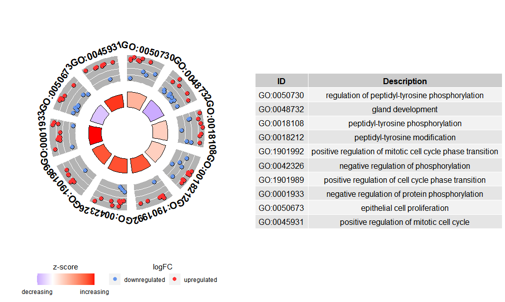

绘制GO富集的圈圈图实例
载入R包
library(clusterProfiler)
library(org.Hs.eg.db)
library(GOplot)
library(stringr)
载入差异表达数据
## Warning in readChar(con, 5L, useBytes = TRUE): cannot open compressed file 'F:/
## diff_expr.Rdata', probable reason 'No such file or directory'
## Error in readChar(con, 5L, useBytes = TRUE): cannot open the connection
## logFC AveExpr t P.Value adj.P.Val B probe_id symbol change
## 1 -5.780170 7.370282 -82.94833 3.495205e-12 1.163798e-07 16.32898 8133876 CD36 down
## 2 4.212683 9.106625 68.40113 1.437468e-11 2.393169e-07 15.71739 7965335 DUSP6 up
## 3 -5.633027 8.763220 -57.61985 5.053466e-11 4.431880e-07 15.04752 7972259 DCT down
## 4 3.801663 9.726468 57.21112 5.324059e-11 4.431880e-07 15.01709 7972217 SPRY2 up
## 5 -3.263063 10.171635 -50.51733 1.324638e-10 8.821294e-07 14.45166 8129573 MOXD1 down
## 6 3.843247 9.667077 45.87910 2.681063e-10 1.487856e-06 13.97123 8015806 ETV4 up
## ENTREZID
## 1 948
## 2 1848
## 3 1638
## 4 10253
## 5 26002
## 6 2118
保留差异表达基因
diff_expr = diff_expr[diff_expr$change!="stable",]
diff_expr = diff_expr[1:100,]
gene_diff = diff_expr$symbol
富集分析
enrich_BP <- enrichGO(gene = gene_diff, keyType = "SYMBOL", OrgDb= org.Hs.eg.db,
ont = "BP", pAdjustMethod = "BH", minGSSize = 1,
pvalueCutoff = 0.05, qvalueCutoff = 0.05)
class(enrich_BP)
## [1] "enrichResult"
## attr(,"package")
## [1] "DOSE"
提取图像绘制需要的输入数据
enrich <- data.frame(enrich_BP)
colnames(enrich)
## [1] "ID" "Description" "GeneRatio" "BgRatio" "pvalue" "p.adjust"
## [7] "qvalue" "geneID" "Count"
数据整理
enrich <- enrich[1:10,c(1,2,8,6)]
enrich$geneID <- str_replace_all(enrich$geneID,"/",",")
names(enrich)=c("ID","Term","Genes","adj_pval")
enrich$Category = "BP"
head(enrich)
## ID Term
## GO:0050730 GO:0050730 regulation of peptidyl-tyrosine phosphorylation
## GO:0048732 GO:0048732 gland development
## GO:0018108 GO:0018108 peptidyl-tyrosine phosphorylation
## GO:0018212 GO:0018212 peptidyl-tyrosine modification
## GO:1901992 GO:1901992 positive regulation of mitotic cell cycle phase transition
## GO:0042326 GO:0042326 negative regulation of phosphorylation
## Genes
## GO:0050730 CD36,AREG,TGFA,CD24,SFRP1,ITGB3,MIR221,SH2B3,CNTN1,INPP5F,MVP
## GO:0048732 ETV5,CCND1,AREG,SERPINF1,SFRP1,IGFBP5,JUN,SEMA3C,SOX2,SNAI2,PBX1,E2F7,RARB
## GO:0018108 CD36,AREG,TGFA,CD24,SFRP1,ITGB3,MIR221,EPHA5,SH2B3,CNTN1,INPP5F,MVP
## GO:0018212 CD36,AREG,TGFA,CD24,SFRP1,ITGB3,MIR221,EPHA5,SH2B3,CNTN1,INPP5F,MVP
## GO:1901992 DTL,CCND1,CDCA5,CDC25A,MIR221,PBX1,CDC45
## GO:0042326 DUSP6,SPRY2,NUPR1,SPRY4,UBASH3B,SFRP1,JUN,TLR4,TIMP3,MIR221,SH2B3,INPP5F,MVP
## adj_pval Category
## GO:0050730 0.0001172193 BP
## GO:0048732 0.0001314734 BP
## GO:0018108 0.0001314734 BP
## GO:0018212 0.0001314734 BP
## GO:1901992 0.0001567831 BP
## GO:0042326 0.0001741554 BP
genes <- data.frame(ID = diff_expr$symbol, logFC = diff_expr$logFC)
head(genes)
## ID logFC
## 1 CD36 -5.780170
## 2 DUSP6 4.212683
## 3 DCT -5.633027
## 4 SPRY2 3.801663
## 5 MOXD1 -3.263063
## 6 ETV4 3.843247
转化成输入数据
circ <- circle_dat(enrich,genes)
head(circ)
## category ID term count genes logFC
## 1 BP GO:0050730 regulation of peptidyl-tyrosine phosphorylation 11 CD36 -5.780170
## 2 BP GO:0050730 regulation of peptidyl-tyrosine phosphorylation 11 AREG 3.095910
## 3 BP GO:0050730 regulation of peptidyl-tyrosine phosphorylation 11 TGFA 2.518930
## 4 BP GO:0050730 regulation of peptidyl-tyrosine phosphorylation 11 CD24 -3.322533
## 5 BP GO:0050730 regulation of peptidyl-tyrosine phosphorylation 11 SFRP1 2.103767
## 6 BP GO:0050730 regulation of peptidyl-tyrosine phosphorylation 11 ITGB3 3.162000
## adj_pval zscore
## 1 0.0001172193 0.904534
## 2 0.0001172193 0.904534
## 3 0.0001172193 0.904534
## 4 0.0001172193 0.904534
## 5 0.0001172193 0.904534
## 6 0.0001172193 0.904534
绘制图像
GOCircle(circ)
